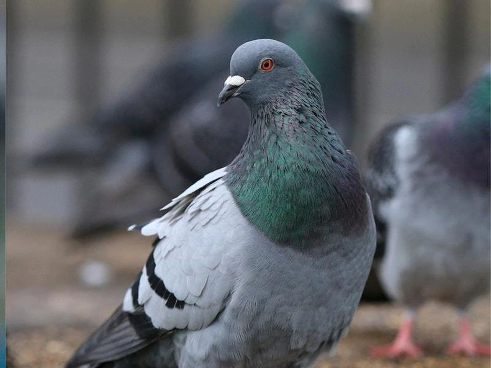

Pigeon

Click on the picture for a step-by-step guide
Interesting facts about pigeons:
- Pigeons are renowned for their outstanding navigational abilities. They use a range of skills, such as using the sun as a guide and an internal ‘magnetic compass’.
- Pigeons can fly at altitudes up to and beyond 6000 feet, and at an average speed of 77.6 mph.
The fastest recorded speed is 92.5 mph.
- Pigeons are highly sociable animals. They will often be seen in flocks of 20-30 birds.
- Both female and male pigeons share responsibility of caring for and raising young.
Both partners take turn incubating the eggs and both feed the chicks ‘pigeon milk’ – a special secretion from the lining of the crop which both produce.
- The word ‘pigeon’ is actually derived from the Latin word ‘pipio’, which means ‘young bird’.
The word then passed into Old French as ‘pijon’ and thus the English name ‘pigeon’ was derived